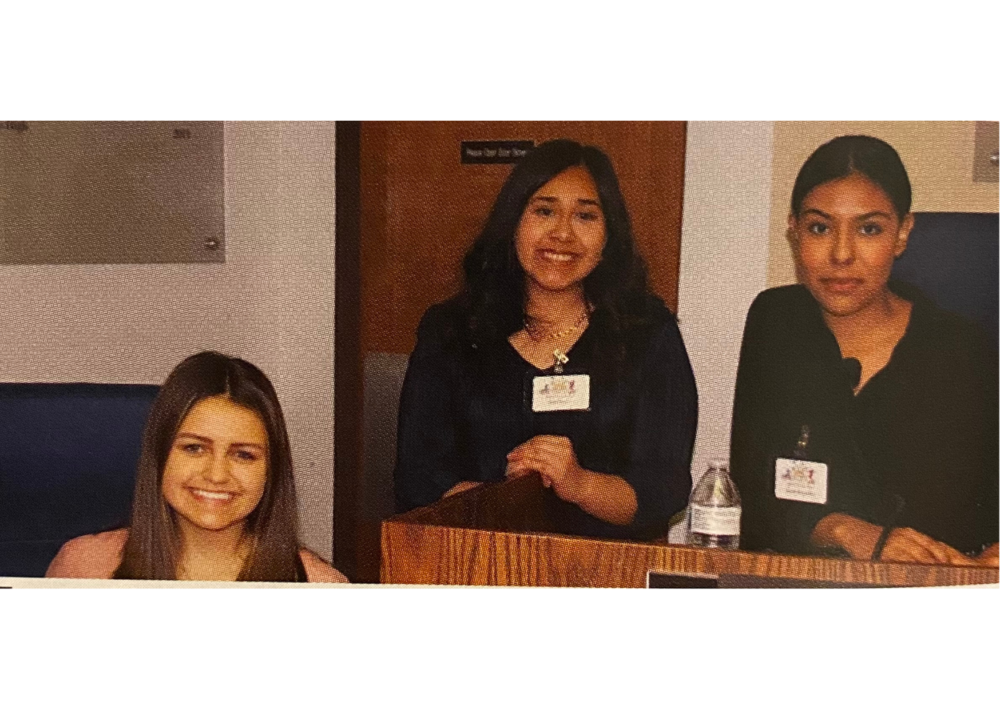
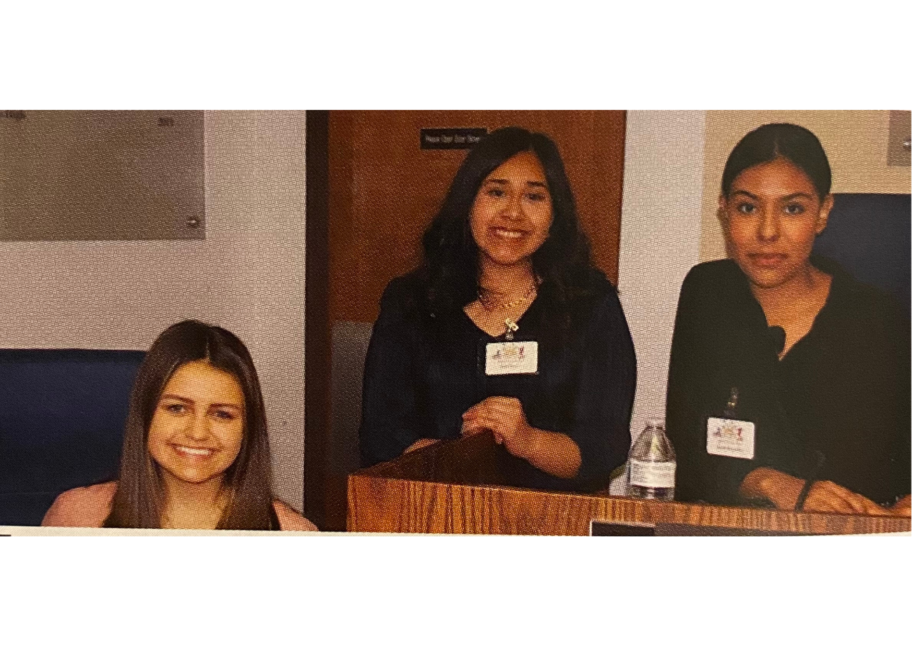
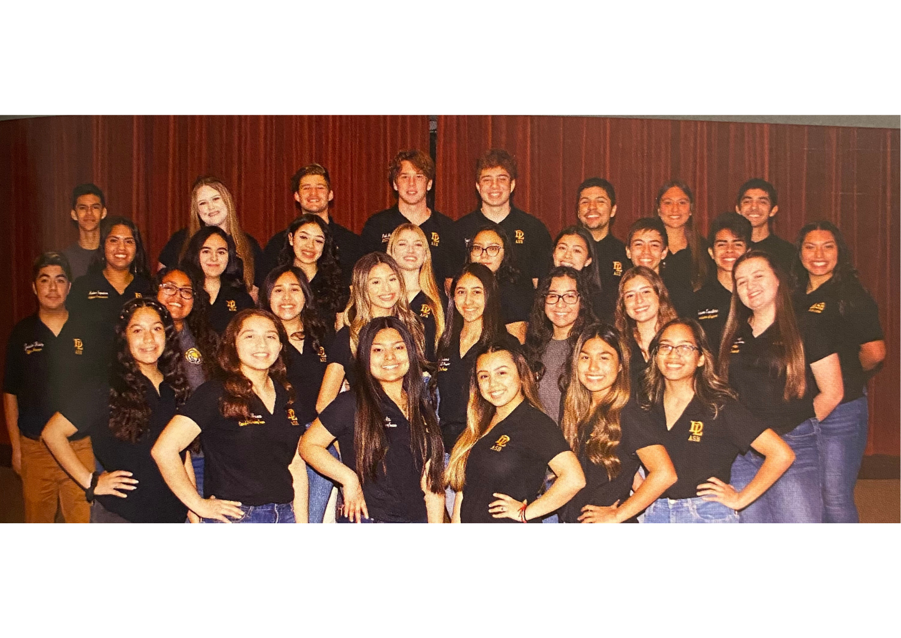
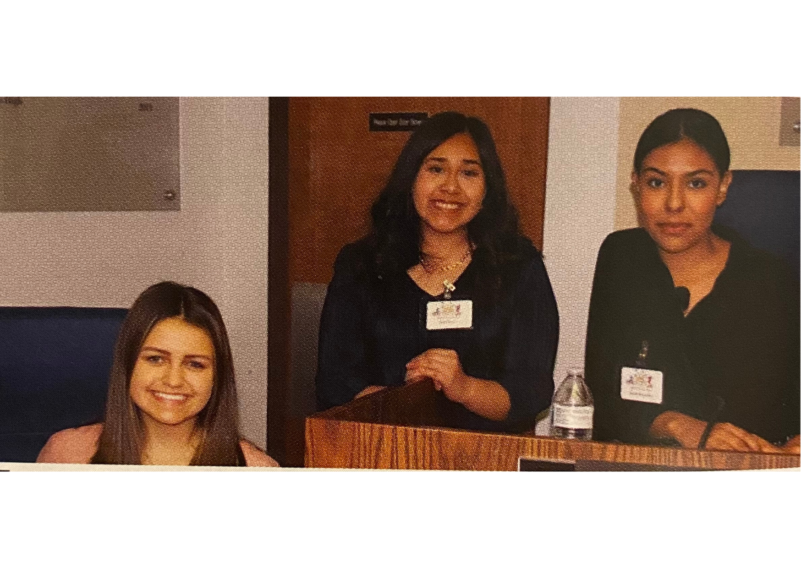
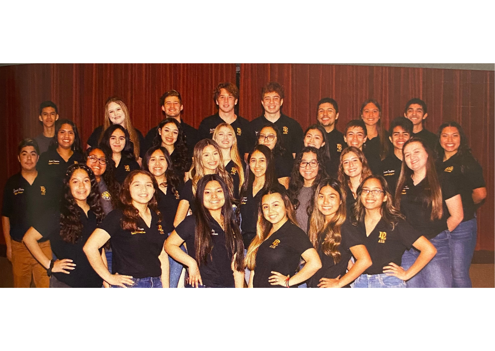

Haley Perez-Rodriguez
Haley Perez-Rodriguez is a highly motivated second-year student attending the University of California Riverside. With experience in leadership, publicity, and hospitality, Haley has enjoyed planning and executing events that create a positive atmosphere for both my school and community. In previous positions, she had increased connections with students to create meaningful and individualized events. Haley as has also proven herself to be diplomatic, personable, and adept at managing sensitive situations.
As a Teen Volunteer for the City of Chino, Haley learned how to think on her feet and communicate well with others. Although her volunteer tasks were clearly delegated, she had to be able to adapt to any unexpected changes in the schedule and adjust her work accordingly. She worked in a fast-paced environment alongside people from a range of different cultural backgrounds with she enjoyed every moment of. She also enjoyed the challenge of helping the children in her care learn new skills and grow in confidence. Her biggest accomplishment during her community service was helping to organize city events at both city hall and community centers. The community attended these events, and they all enjoyed participating together. During this time, she learned so much more about her community’s culture, their hopes and their dreams. As a result of her community service, she gained hands-on experience in community planning and commissioning strategic communication process that builds mutually beneficial relationships between organizations and their public’s perception. Her volunteer journey was an amazing experience that will remain in her memory forever – thanks to all the amazing people who accompanied her in making their community more united.
During her time in Highschool, Haley was involved as a class committee volunteer and member of the Associated Student Body. As an appointed member of the ASB executive board, she focused on providing engaging activities that ensured a well-rounded high school experience and was honest, trustworthy, responsible, reliable, willing to work hard, humble, respectful to both adults and fellow students, and had school pride. To create a memorable experience for all students on campus, she promoted unity and spirit, and to implement growth as a student leader. She planned, organized, and participated in such activities as formal and informal dances, Homecoming, Spirit Week, grade-level competitions, community awareness projects, cultural events, and Staff Recognition throughout the year. Creating a positive atmosphere during the school day where students feel wanted and accepted is critical to her success as the Activities commissioner.
Experience
Teen Opportunity Program City Volunteer
• Hard working and dependable community service volunteer with a strong record for working as a team player.
• Maintained professional and friendly interactions with guest and upheld community relations.
• Able to handle a variety of tasks, including heavy lifting, organization and communicating with the public of the City of Chino.
AVID President
• Elected by the AVID senior class to oversee and manage the vision of the organization.
• Led an executive team towards maintaining a positive environment for student success.
• Played key role in organizing and planning fraternity events.
ASB Activities Commissioner
• Present, organize, and prepare games and activities for school-wide events and activities that encourage student fraternity.
• Reviewed and evaulted student turnout.
• Oversee posters and school advertisements of events.
Education
University of California Riverside
Portfolio
 


